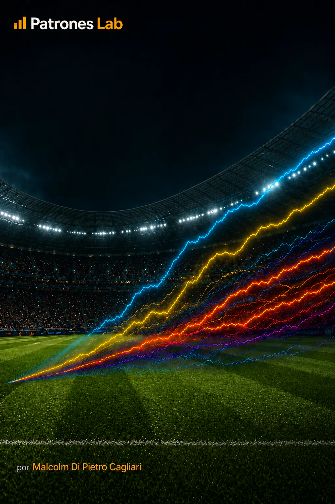

MACHINE LEARNING · PROGETTO 06

Progetto 15 · Analisi calcistica
Simulazione Monte Carlo · Previsioni per il Mondiale 2026
Simulazione di un milione di scenari del Mondiale 2026 basata sui rating Elo di eloratings.net, orientata a stimare le probabilità di raggiungere le semifinali, disputare la finale e diventare campione.
CONTESTO E OBIETTIVO
Costruire un modello probabilistico per stimare come può evolvere la fase decisiva del Mondiale 2026, integrando la forza relativa di ogni nazionale e la struttura reale del tabellone a eliminazione diretta.
L’obiettivo non è affermare un unico risultato, ma quantificare l’incertezza attraverso probabilità confrontabili tra squadre e fasi del torneo.
MODELLO E DIAGNOSI
- Gli input combinano 32 nazionali e 31 partite del tabellone con rating Elo di eloratings.net aggiornati al 2 luglio 2026, insieme a controlli su duplicati, valori mancanti e squadre non corrispondenti.
- La probabilità di ogni incontro viene calcolata dalla differenza di rating Elo tramite la funzione logistica standard del sistema Elo.
- Il modello esegue 1.000.000 di simulazioni del torneo con un seme casuale riproducibile; i risultati osservati vengono fissati e il percorso restante viene proiettato dai quarti di finale fino al campione.
- Gli output consolidano le probabilità di raggiungere le semifinali, disputare la finale e vincere il torneo, oltre a visualizzazioni comparative con uno stile editoriale coerente.
CONSEGNA E APPRENDIMENTO
La consegna collega preparazione dei dati, probabilità Elo, simulazione Monte Carlo e visualizzazione per trasformare un tabellone a eliminazione diretta in una lettura probabilistica riproducibile.
Lo sviluppo è pubblicato su GitHub con il file di input, entrambi i notebook e le visualizzazioni delle previsioni; la sintesi del progetto è disponibile anche su LinkedIn.